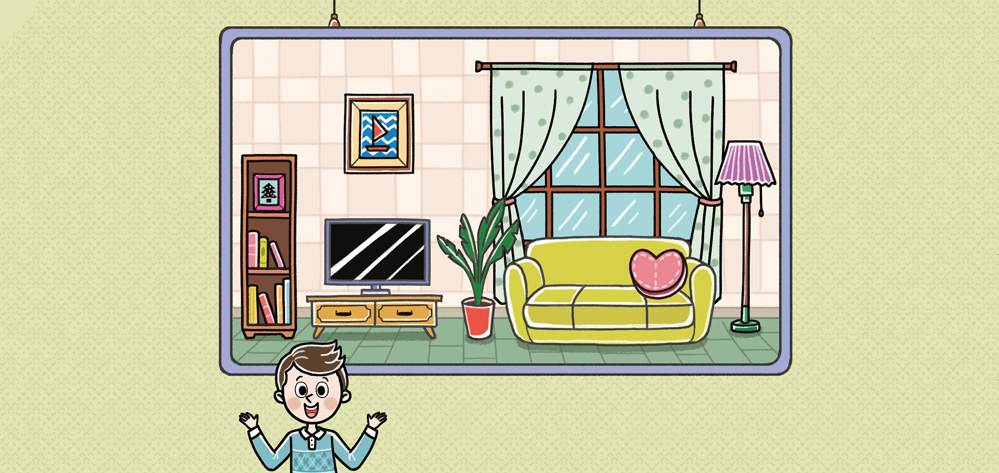
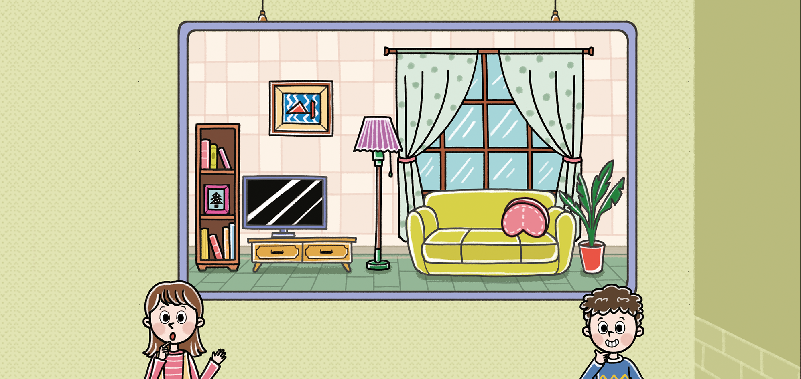

- 그림
- 물음 1
- 물음 2
- 물음 3
- 물음 4
- 물음 5
- 물음 6
- 물음 7
- 물음 8
-
-
두 그림은 어디가 다른 걸까?
-
텔레비전의 위치가
왼쪽으로 움직였고
쿠션은 뒤집어진 것
같아.액자도 돌아간
것 같은데, 그것
말고 다른 것도
있을까?
-
-
그림은 어떤 상황인가요?
거실이 그려진 액자 2개가 있습니다. -
그림에서 볼 수 있는 것들은 무엇인가요?
소파, 텔레비전, 쿠션, 액자, 화분, 책 등이 있습니다. -
왼쪽과 오른쪽 거실 그림을 자세히 살펴보세요.
-
예
물건의 위치와 방향 등을 살펴보세요.
-
예
-
두 그림을 비교했을 때 달라진 점이 있나요?
거실 물건들의 위치와 방향이 조금씩 달라졌습니다. -
두 그림에서 무엇이 어떻게 달라졌는지 함께 찾아보세요.
텔레비전의 위치가 옮겨졌습니다.
소파 위의 쿠션이 뒤집혔습니다.
거실에 있는 액자가 90˚만큼 돌아가 있습니다. -
위에서 이야기한 것들 이외에 달라진 것들을 더 찾아보세요.
화분과 전등의 위치가 서로 바뀌었습니다.
책꽂이의 액자와 책이 서로 바뀌었습니다. -
실생활 속에서 평면도형의 이동(밀기, 뒤집기, 돌리기)을 이용하여 무늬를 꾸민 물건을 찾아보세요.
우산, 컵, 신발주머니, 학용품 등이 있습니다. -
각각의 물건을 살펴보면서 물건의 무늬들이 어떠한 방법으로 그려졌는지 찾아 발표해 보세요.
-
예
반복되는 도형으로 그려졌습니다.
-
예